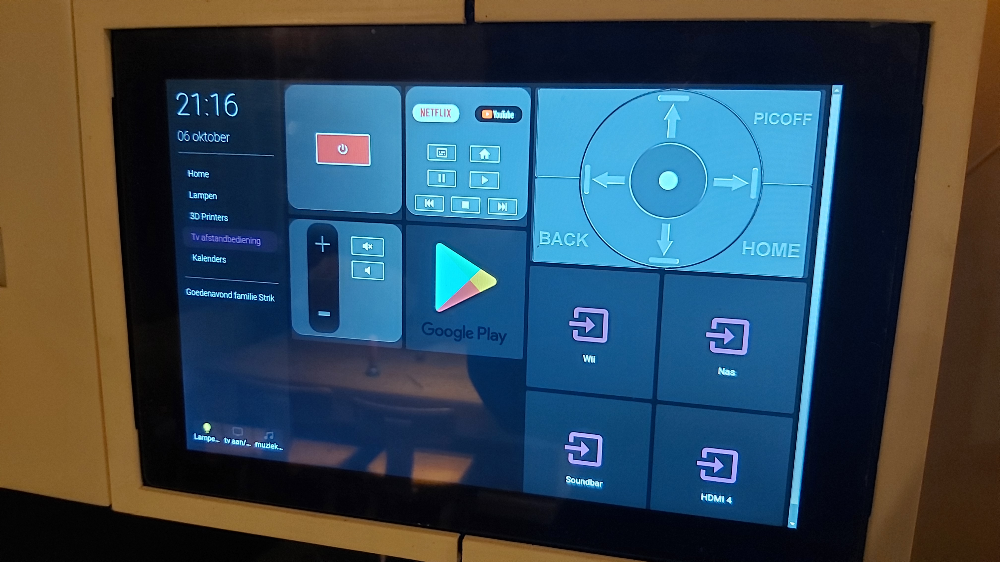
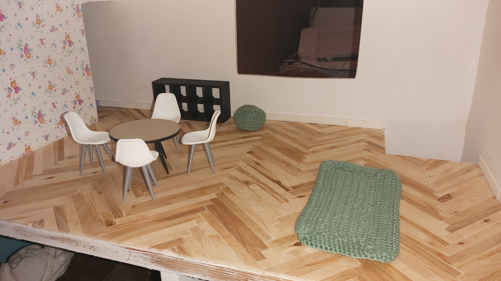
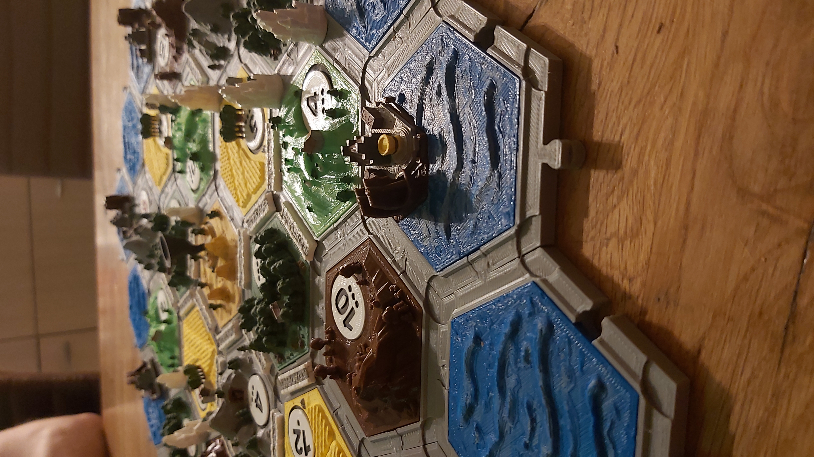

Stages
Danego B.V.
Camping Boekels Ven
Banen
Esso Boekel
Hier stond ik achter de kassa, zorgde dat alles netjes was en maakte de roosters voor het personeel.
Ook hielp ik wat mee in de administratie.
Rob van de Ven Elektro
De belangrijkste werkzaamheden waren: offertes maken, facturen maken en inboeken, telefoon beantwoorden en de debiteuren- en crediteurenadministratie.
Camping Boekels Ven
- Debiteuren- en crediteurenadministratie
- Reserveringen verwerken
- Facturen klaarzetten in de bank
- Reserveringen programma aanpassen en verbeteren
- Reserveringsgedeelte op de website upgraden en bijhouden
- Kerstpakketten verzorgen
- Vakantiemedewerkers regelen
- Personeelsrooster maken in de zomervakantie
- Urenregistratie vakantiepersoneel en lonen verzorgen
Hobbies
Home Assistant

Thuis heb ik Home Assistant draaien, waar ik graag mee experimenteer. De meeste lampen en speakers in ons huis zijn slim, en door scenes te maken hoef je weinig meer tegen Google te zeggen.
Ook ben ik veel bezig met de Raspberry Pi. Aan de 3D printers hangt Octoprint en ook deze staat in Home Assistant.
Verder draait Magic Mirror nog en hangen daar Neopixel lampjes bij die per ledje aangestuurd kunnen worden.
Kleding bedrukken / Stickers maken

In 2020 heb ik een jaar een bedrijf gehad in kleding bedrukken en stickers maken. Hoewel het goed ging heb ik helaas moeten besluiten om
dit bedrijf te stoppen. De combinatie van 2 banen vond ik erg lastig en ga liever helemaal voor 1 baan, dan voor 2 banen half.
Daarom heb ik op dat moment voor Camping Boekels Ven gekozen.
3D Printen


Ik heb thuis 2 3D printers staan. Allebei dezelfde, namelijk de Creality CR6SE. Ik teken zelf en haal ook bestanden van internet.
Het meeste wat ik print is een bepaald onderdeel wat ik net nodig had, of logo's van bedrijven of bands.


Het grootste project wat ik tot nu toe heb geprint is het spel: De kolonisten van Catan. Hier zitten zo'n 200 printuren in en nog vele uren schilderen.
Ook kan ik mallen maken van 3D prints om ze vervolgens te gebruiken voor het gieten van Epoxy. Hier heb ik nog niet zoveel ervaring mee.